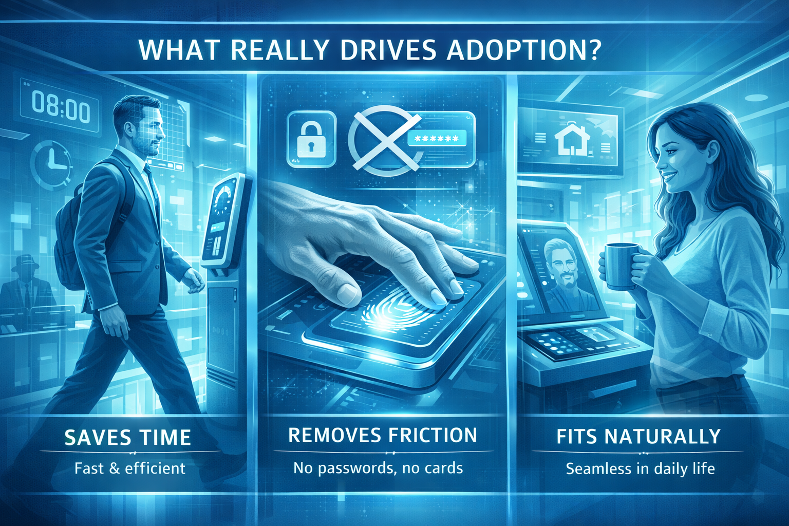
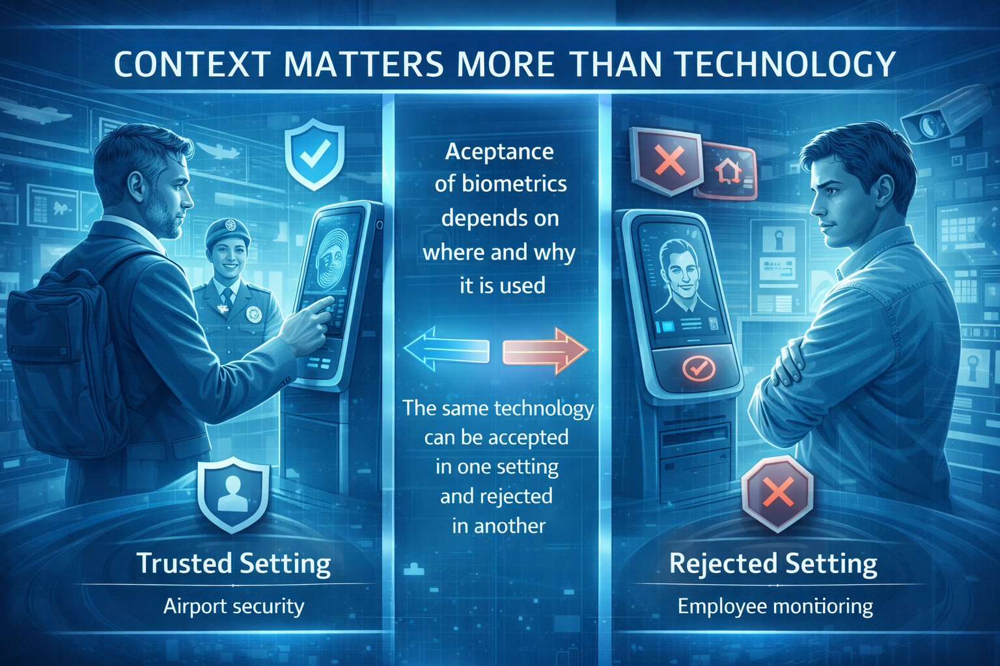
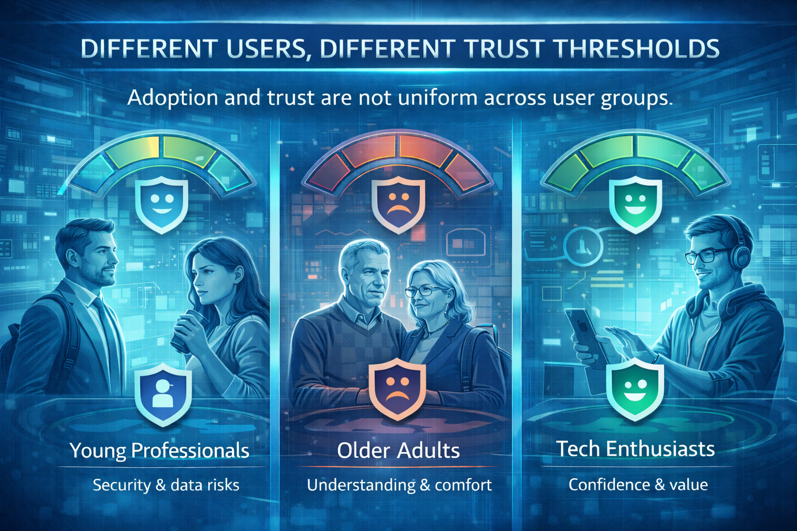

Over the past five years, I have researched how people perceive, accept, and use biometric technologies, with a focus on facial biometrics in everyday and regulated contexts. These insights are based on my PhD research, qualitative interviews, large-scale surveys, and a review of international studies on biometric adoption and user trust.
Below is a short snapshot of key patterns that consistently appear across studies and real user feedback. Think of this as an insight preview — real product decisions should always be supported by context-specific research and fresh data.

People are primarily motivated by convenience and speed, not by abstract promises of security.
People adopt biometric solutions when they clearly see that the technology:
Security matters, but it is often assumed as a baseline expectation rather than a selling point. If the product is not simple and fast, trust alone will not drive usage.
Trust is shaped by knowledge and real user experience.
Key trust drivers include:
The most common trust breakers are:
Even small technical or communication failures can significantly reduce willingness to continue using biometric solutions. Clear communication with ordinary people is equally important—they need to understand the product, how it works, and what they benefit from using it.

Acceptance of biometrics depends strongly on where and why it is used.
People are generally more comfortable with biometrics in contexts such as:
Acceptance drops significantly in contexts perceived as:
The same biometric technology can be trusted in one setting and rejected in another. Adoption strategies, therefore, cannot be one-size-fits-all.
People often express concerns about privacy and data misuse, especially when:
However, research shows that perceived benefits and trust in the provider can outweigh privacy concerns, particularly when:
This creates a critical role for transparent communication and ethical design.

Adoption and trust are not uniform across user groups.
Factors influencing acceptance include:
Some groups prioritize convenience; others, privacy and control.
This makes segmentation and tailored communication essential, especially in regulated or health-related applications.
Successful biometric adoption requires alignment between:
From a market perspective, this means:
These insights reflect consistent patterns observed in my own empirical research and in international studies on biometric adoption.
However, specific markets, use cases, and user groups may differ significantly.
For product development, go-to-market strategies, or regulatory-sensitive deployments,
Targeted user research and real-world testing are essential.
I combine academic research methods with applied market insight to support:
General insights are useful for orientation, but real product decisions require context-specific data and user feedback.
If you are developing or deploying biometric or AI-based identity solutions and want to better understand:
feel free to reach out for tailored research and product-focused insight support.
Reach Out